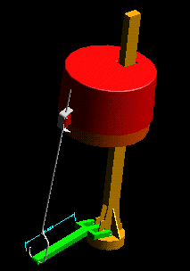

This VGx example shows how the assembly relationships are also built usig the VGx technology. In this particular example the relationships form a loop and this can be seen by using the Browser.
Model file :- VGx_vignettes.mf*



Show the relationships between the part instances.

Double click on the top item Hi2-Pivot_1, to see it's relationships
Tech Tips
You can carry on with the Browser around the loop.